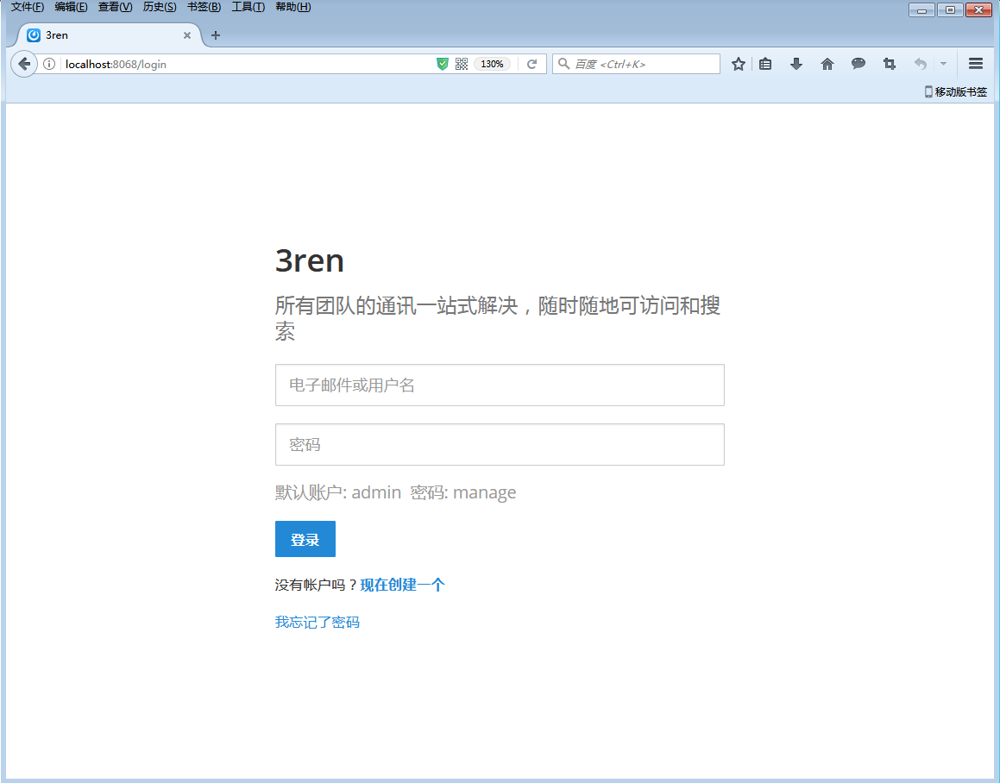
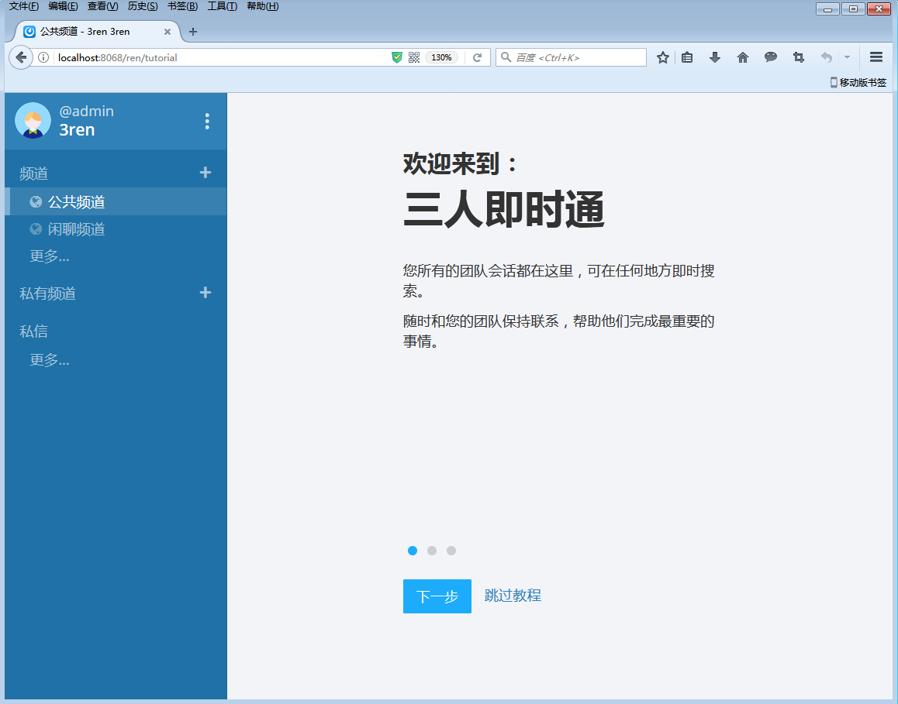

<link rel="import" href="../bower_components/polymer/polymer.html">
<link rel="import" href="../bower_components/polymer-bootstrap/polymer-bootstrap.html">
<link rel="import" href="../bower_components/iron-media-query/iron-media-query.html">
<!-- <link rel="import" href="../bower_components/iron-swipeable-pages/iron-swipeable-pages.html"> -->

<dom-module id="sameview-introduction1">
  <link rel="import" type="css" href="../css/animate.min.css">
  <link rel="import" type="css" href="../css/page.css">
  <link rel="import" type="css" href="../css/style.css">
  <template>
    <style include="polymer-bootstrap">
    a:focus,a:hover{
      text-decoration: none;
    }
    </style>
      <iron-media-query query="max-width: 768px" query-matches="{{_smallScreen}}"></iron-media-query>
    <app-route
        route="[[route]]"
        pattern="/:category"
        data="{{_routeData}}">
    </app-route>
    <div class="" fade-in$="[[!loading]]" hidden$="[[failure]]">
    <div class="int_content">
      <div class="quotebg">
        <template is="dom-if" if="![[_smallScreen]]">
          <div class="quoteImg" style="background-image:url(../images/introduction.jpg);"></div>
        </template>
      </div>
    <div class="container">
    <!-- <div class="breadcrumbs">
        <h1>快速上手 - Step 1: 下载、安装和部署</h1>
    </div> -->
    <div class="intContent">
      <div class="col-md-3">
        <nav class="sidebar">
          <a href="/introduction"><span></span>Step1：安装前准备</a>
          <a href="/introduction0"><span></span>Step2：Windows、Linux安装</a>
          <a href="/introduction1" class="selected" style="font-weight:bold;color:#122A88;"><span style="border: 5px solid #122A88;"></span>Step 3: 系统登录</a>
        </nav>
      </div>

      <div class="col-md-9">

        <div class="container col-md-12">

    <div class="panel panel-default">
        <div class="panel-heading">系统登录</div>
        <div class="panel-body">
            <p>1.打开浏览器输入安装时设置的服务器地址（例如：<strong>http://localhost:8068/</strong>) ,即可打开<strong>3ren</strong>启动界面，输入用户名和密码进行登录。默认帐户为<strong>admin</strong>，默认密码为<strong>manage</strong>，字母都是小写。</p>
                
                <p>&nbsp;</p>
            <p>2.登录后默认加入<strong>3ren</strong>团队，如图所示：</p>
                 
                 <p>&nbsp;</p>

        </div>
    </div>


      </div>
    </div>
    </div>
    </div>
    </div>

  </div>
</template>
<script>
  Polymer({
    is: 'sameview-introduction1',
     ready: function(){
       var win = $(window);
       $(window).resize(function(){
         this.winwidth = win.width();//屏幕的宽  .width()
         this.winheight = win.innerHeight()-1;//屏幕的高
         var bgHeight = this.winheight;
        //  $(this.$.bg).height(bgHeight);
       });
       this.winheight = win.innerHeight()-1;//屏幕的高
       this.winwidth = win.width();//屏幕的宽  .width()
       var bgHeight = this.winheight;
      //  $(this.$.bg).height(bgHeight);
     },


  });

</script>

</dom-module>
